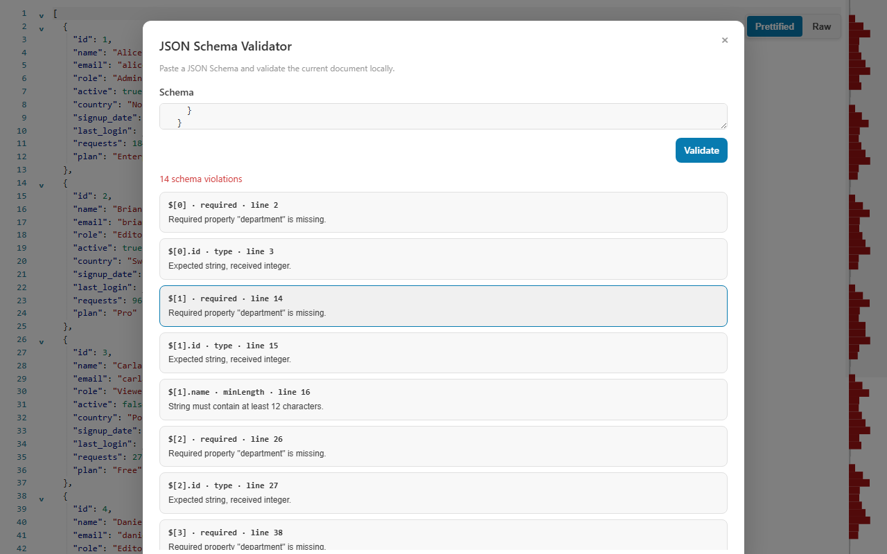

A JSON Schema validator that shows the exact failing line
Valid JSON can still break your contract. CodePrettify validates the open JSON or JSONC document against a pasted JSON Schema entirely on your device and reports every violation with its instance path, keyword, message, schema path, and source line — then jumps you straight to it.
Run against a document where environment is "prod", replicas is 1, and contact is missing its domain. Each result carries an instance path, keyword, message, schema path, and source line.
/environment enum
not one of "staging", "production"
#/properties/environment/enum → line 3
/replicas minimum
1 is below the minimum of 2
#/properties/replicas/minimum → line 4
/contact format
not a valid "email"
#/properties/contact/format → line 5
✓
The schema stays on your device.
Only local # references and anchors are resolved — remote schemas are never downloaded. Paste the contract you intend to trust and validate the document in place.
Hands-on tutorial
Validate a document against a schema in one pass
Use the example schema above or your own contract. The habit that pays off is reading each violation’s path and keyword instead of skimming the summary.
Open the document you want to check
Open a normal JSON or JSONC document. JSON Lines is not supported — convert the records to a JSON array first (JSON Repair & Transform can produce one).
Open JSON Schema Validator
Find it in More Actions or the Command Palette; the Windows app also lists it in the Tools menu.
Paste the schema
Paste up to 2 MiB of schema text. Only local # references and anchors are resolved, so inline any external definitions under $defs before pasting. The schema is kept for the session, which makes iterating cheap.
Choose Validate or press Ctrl+Enter
Inside the dialog, Ctrl+Enter (Cmd+Enter on macOS) runs the primary action. The operation and time budgets apply separately to checking your schema and to validating the document.
Read each violation completely
Every result reports the instance path, the keyword that failed, a message, the schema path, and the source line. Up to 100 errors are reported per run — if you hit that ceiling, fix the loudest class of failures and run again.
Select a result to jump to the line
Selecting a violation jumps to its source line in the document. Fix the value — or fix the schema when the rule itself was wrong — and validate again.
Grow the schema gradually
Begin with one required field or one enum rule, validate, then add constraints. This separates a wrong schema assumption from a genuinely invalid payload.
Before you trust a green result
A clean run is only as good as the contract behind it. Confirm these five points.
The pasted schema is the contract version you intend to trust.
No limit was hit — a run that hits any limit is never reported as valid.
Every format you rely on is in the validated list; unrecognized format names are ignored, not enforced.
Rules that depend on unevaluatedProperties are verified elsewhere — the validator reports that keyword as unsupported.
Remote $ref targets were inlined as local references, not assumed.
Supported keywords
Draft 2020-12 forms and the legacy spellings, side by side
Schemas in the wild mix generations. The validator understands 2020-12 forms such as prefixItems, $defs, and dependentRequired alongside the legacy items, definitions, and dependencies forms.
Types and values
object, array, string, number
integer, boolean, null
enum allowed-value lists
const exact values
Numeric and string rules
Numeric bounds and multiples
Exclusive limits
String length constraints
Patterns with safe regular expressions
Objects and arrays
Required properties
Property and item counts
Unique array items
prefixItems and legacy items tuples
Composition and conditionals
allOf, anyOf, oneOf
not
if / then / else
Dependencies and references
dependentRequired
Legacy dependencies
$defs and legacy definitions
Local # references and anchors only
Validated formats
email, hostname
ipv4, ipv6, uuid
date, time, date-time
uri, uri-reference, regex
Unrecognized format names are ignored rather than validated.
Honest boundaries
unevaluatedProperties reported as unsupported
Unsafe regular expressions rejected as too complex
Remote schemas never downloaded
A run that hits any limit is never reported as valid
Limits and failure guide
Know exactly when a result can and cannot be trusted
The budgets exist so a pathological schema or a hostile document cannot freeze the tab — and they are disclosed instead of hidden. A run that hits any of them is never reported as valid.

The pasted schema, the validation summary, and each violation’s path, message, and source-line link in one panel.
What you see
What it means
Best next action
Zero violations
Every rule passed within the operation and time budgets.
Confirm the pasted schema is the contract version you intend to trust, then move on.
Violations with paths and lines
The document breaks specific rules at specific places.
Select each result to jump to its source line; fix the value or the rule and re-validate.
Schema rejected as too complex
A regular expression uses backreferences, lookarounds, repeated groups with alternation or inner quantifiers, consecutive overlapping quantifiers, or exceeds 512 characters.
Simplify the pattern — the validator refuses runaway-prone regexes instead of freezing.
unevaluatedProperties reported as unsupported
The keyword is outside the supported set, and the tool says so instead of silently passing it.
Verify that part of the contract elsewhere and rely on the supported keywords here.
A limit was hit (2 MiB schema, depth 80, 100 errors, 100,000 operations, ~2.5 s)
A budget was exhausted; budgets apply separately to schema checking and document validation, and the run is never reported as valid.
Reduce the schema or document scope and run again.
The document is JSON Lines
The validator supports normal JSON and JSONC documents only.
Convert the records to a JSON array — JSON Repair & Transform produces one — and validate that.
Working rhythm: the pasted schema is kept for the session, so you can edit the document, switch views, and re-open the validator without pasting the contract again. Iterate in small steps — validate, jump to the first violation’s source line, fix the value or tighten the rule, and run again with Ctrl+Enter until the summary reads clean. Because remote references are never fetched, results are reproducible on any machine: the same document and the same pasted schema always produce the same verdict, offline or online.
FAQ
JSON Schema validation questions
Does the JSON Schema Validator fetch remote $ref schemas?
No — this is a deliberate privacy boundary. Only local # references and anchors are resolved, and remote schemas are never downloaded. Paste the complete schema you intend to trust, inlining external definitions under $defs.
Which JSON Schema draft and keywords are supported?
Core types, enum and const, numeric, string, object, and array constraints, composition, conditionals, and dependencies — in Draft 2020-12 forms such as prefixItems, $defs, and dependentRequired as well as the legacy items, definitions, and dependencies forms. unevaluatedProperties is reported as unsupported rather than silently ignored.
Why does a complex regular expression get the schema rejected?
Patterns with backreferences, lookarounds, repeated groups containing alternation or inner quantifiers, consecutive overlapping quantifiers, or more than 512 characters cause the schema to be rejected as too complex. The validator refuses patterns that could run away on pathological input instead of freezing the page — simplify the expression and validate again.
Is JSON Schema validation local?
Yes — completely local. The document stays in the tab, the pasted schema is kept only for the session, and remote schemas are never downloaded.